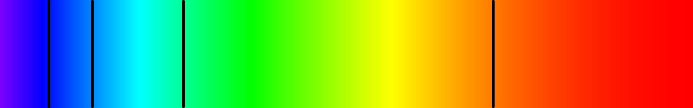

Jaime Villate. Faculdade de Engenharia da Universidade do Porto
O espetro de absorção do hidrogénio, ou seja, luz branca que passa através de hidrogénio sendo depois dispersada nas diferentes cores, apresenta franjas pretas que indicam os comprimentos de onda da luz absorvida pelos átomos.
Outros elementos apresentam também diferentes espetros, com sequências de franjas caraterísticas de cada elemento. A sequência discreta dos comprimentos de onda da luz absorvida não pode ser explicada por nenhum modelo clássico do átomo e deu origem ao desenvolvimento da mecânica quântica.